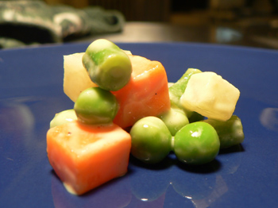

Corn oil versus olive oil
French people love corn oil, that horrible, neutral, yellowish oil that always comes in big, greasy, yellow, homeless-looking containers. Not because it’s corn, but because it has no taste. When they’re not using corn oil, they’re using vegetable oil. It’s oil for the sake of oil, and it’s an idea I just can’t get into. For cooking a steak or frying, it is, of course, perfectly fine. But every salad dressing we’ve learned in class is loaded with the stuff, and all I keep thinking is, wouldn’t this be better with olive oil? My palate must not be refined enough to appreciate these classic dressings. I want to see and taste the oil I’m eating.
We made mayonnaise tonight for the second time. The first time, I used the corn oil called for in the recipe, and while the end result was much more appealing than Hellman’s, which I can’t stomach, it was still redolent of that horrible oil. Tonight, on salad night, I furtively used extra virgin olive oil in every dressing we made, including the mayonnaise, and I felt at home again. (Naturally, when the teacher tasted it, his face contorted, and he said, “Ach! I can taste that olive oil!”)

Here it is on a bit of macédoine de légumes. I know my macédoine is way too big. I forgot how small it’s supposed to be (the size of a pea), and my partner and I were kind of copying each other’s mistake without realizing it. But oh well, it’s just a vegetable salad bathed in delicious olive oil mayonnaise.
To make my mayonnaise, you’ll need a whisk and a bowl. You’ll also need one egg, about a tablespoon of Dijon mustard (or to taste), vinegar to taste (champagne vinegar is nice here), a 1/2 cup or more extra virgin olive oil, and a lemon half. Everything must be at room temperature—if you try to make it with anything that’s cold, it won’t work. Seriously, it will be garbage.
Separate the egg, and put the yolk in a big bowl. Whisk in the mustard, and then whisk in about a tablespoon of vinegar. Season well with salt and pepper, whisking all the while. The oil comes next, and if you try to do this too fast, you’ll have to start over. Pour it in as slowly as you can, at just a drizzle, whisking aggressively as you do this. It’s helpful if someone else pours while you whisk so that you can hold the bowl steady. Once you have a nice emulsion (it should become rather thick), squeeze in lemon juice to taste. If it needs a bit more vinegar, or salt, or oil, add them. Everything here is to taste except the egg yolk, and everyone’s mayonnaise tasted different tonight. We liked it with plenty of lemon juice, which complements the olive oil nicely, and also plenty of salt.
Comments
I never got the hang of separating eggs. Is there a fool-proof way of doing this?
Crack the egg on a bowl, and pour the yolk back and forth between the two halves of the shell, letting the white fall out. That’s as fool-proof a way as I’ve seen.
That’s so interesting about the French and the corn oil, Leland, because Poppy and I took a couples’ cooking class at a local cookware store/cooking school last weekend and the chef made the vinaigrette with vegetable oil. And here I was thinking it was because he was American, but he probably learned it from the French chefs at cooking school. Regardless, I didn’t like it as well as an olive oil vinaigrette.
Colin and Colin, I always use the second Colin’s method, but to be absolutely safe, especially if you want to whip the egg whites, you should probably use separate bowls, that is, not live dangerously and crack the eggs right over whatever it is you’re preparing. That way if a yolk breaks you won’t get yolk in the white. Another trick someone taught me is that if a bit of shell gets into the bowl, take the edge of the broken half of egg shell and scoop out the broken bit. It works really well.
Also, for separating eggs, if you have clean hands, breaking the egg and then pouring it onto your cupped hand and allowing the whites to flow through your fingers works well. Your fingers are less likely to puncture the delicate yolk than the edges of the shell.
i used katy’s method bc i always lose the yolk…
this sounds delicious leland.
Leland,
This is funny, because I was just having this conversation with my sister. She was shocked and appalled at me using vegetable oil in a vinaigrette. It’s true that it’s what they use in France. I’ll use olive oil for certain dressings, but almost always a vegetable oil for vinaigrette that will go on the salad I serve with a cheese course. For mayonnaise, I think that half vegetable oil and half olive oil is a good mix.
When I was at the Cordon Bleu many moons ago, I don’t recall using corn oil at all. That seems awfully peculiar. I am almost certain we used ’l’huile d’arachide’ (peanut oil)…I will try to dig out my notes from way back then to confirm.
Add a comment